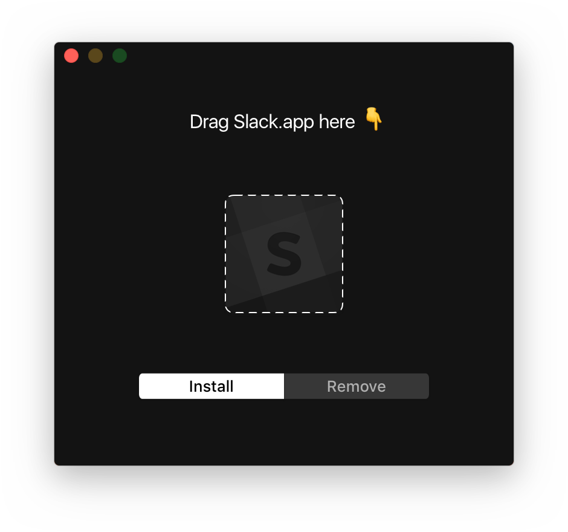
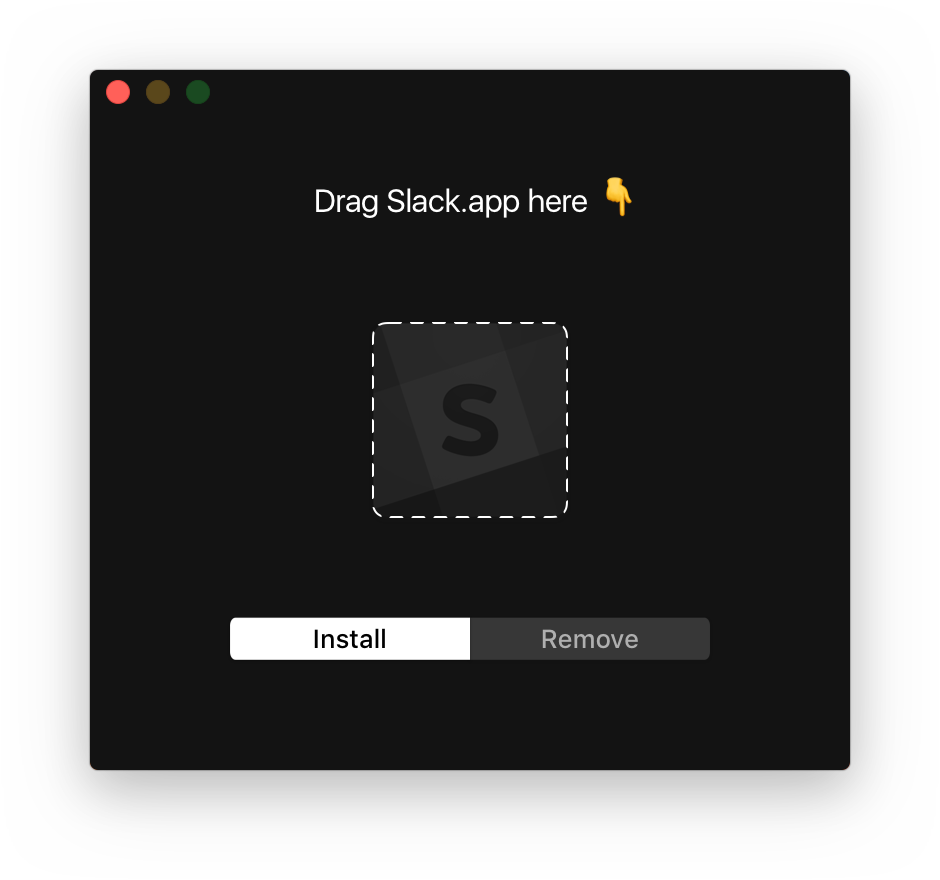
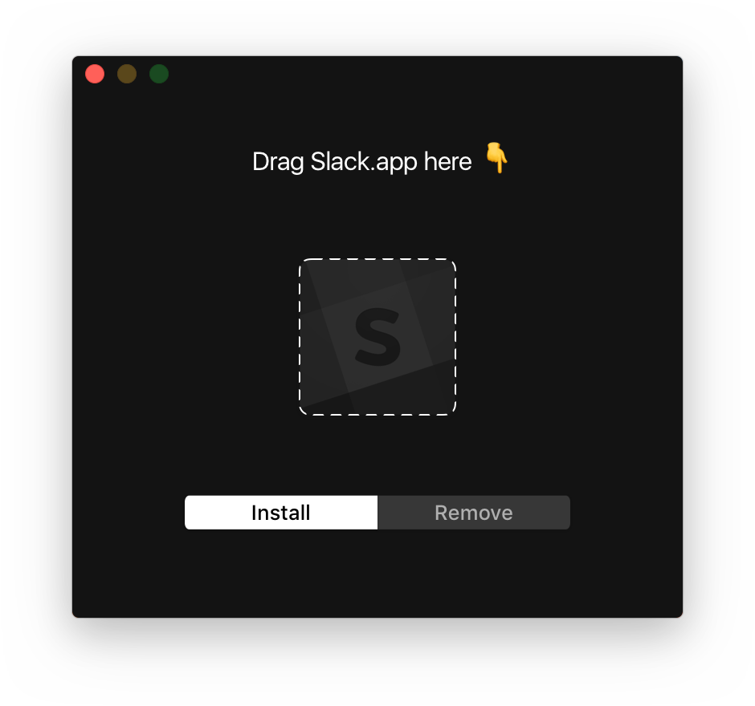
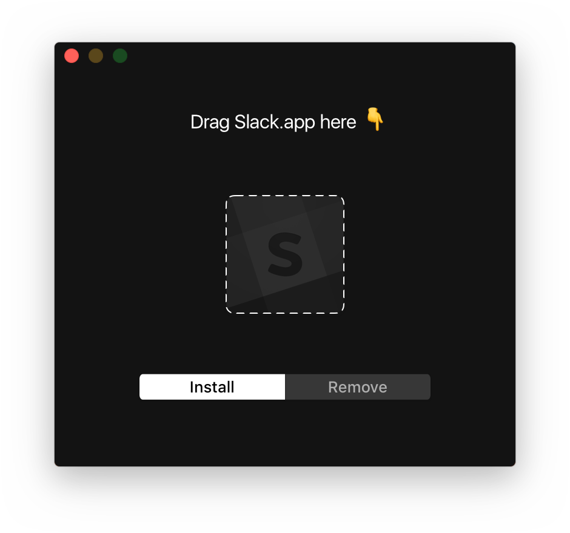
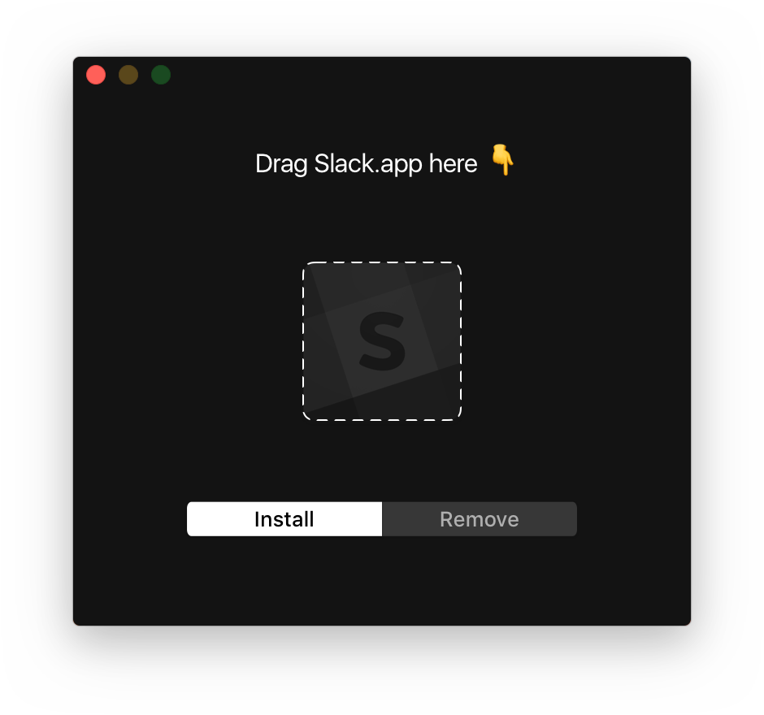

Tweet about it
Sblack
makes
Slack
for Mac easier on your eyes. Just drag and drop and you're done ✨
Download
View and contribute on GitHub
Version 0.1, macOS 10.12 or later required - Original CSS by
Jonathan la Cour

 


